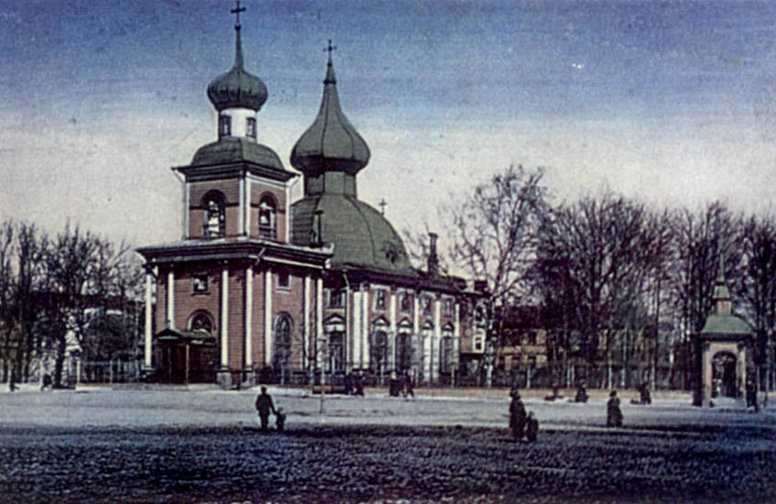

| Название | Архитектурный стиль | Фото |
| Троице-Петровский собор | Петровское барокко |  |
| Екатерингофский дворец | Петровское барокко | |
| Церковь Спаса на Сенной | Высокое барокко | |
| Летний дворец Елизаветы Петровны | Высокое барокко | |
| Особняк Яковлева | Высокое барокко | |
| Литовский замок | Классицизм | |
| Введенская церковь | Классицизм | |
| Ропшинский дворец | Классицизм | |
| Большой театр | Классицизм | |
| Дом-сказка | Модерн |  |